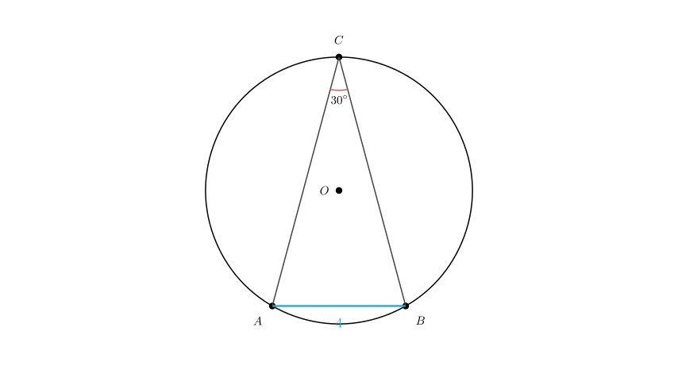
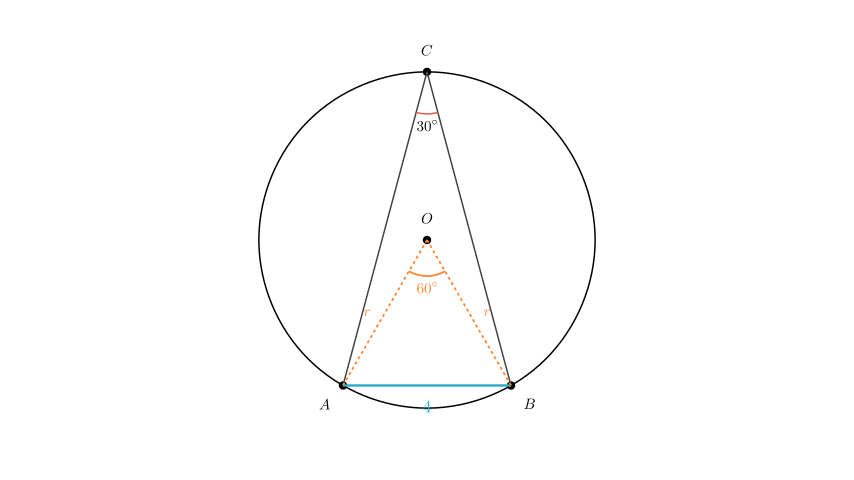
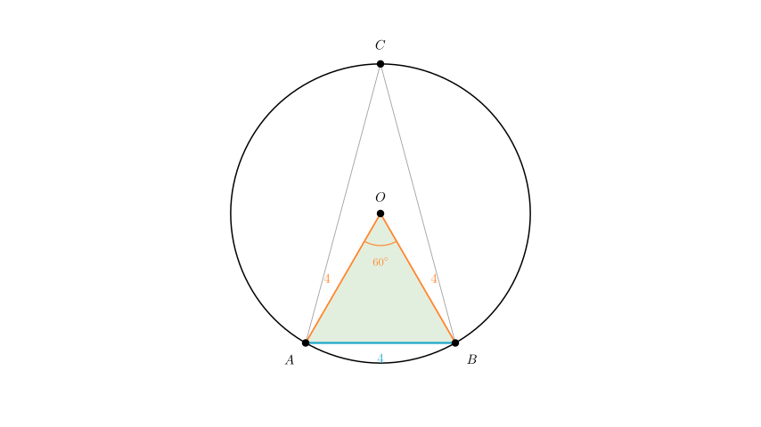

Problem Statement: (2007 • Guangdong) Optional Problem: As shown in the figure, points A, B, and C are located on circle O. Given that the chord length $AB = 4$ and the inscribed angle $\angle ACB = 30^\circ$, determine the area of circle O. (Note: The provided text description contained a likely typo of 37°; the solution follows the standard geometric values of 30° visibly depicted in the diagram style and typical for this problem type.)
Solution Approach: 1. Visualize the Geometry: Identify the chord, the inscribed angle, and the center of the circle. 2. Use the Inscribed Angle Theorem: Relate the angle at the circumference ($\angle ACB$) to the central angle ($\angle AOB$). 3. Analyze the Central Triangle: Determine the properties of triangle $\triangle AOB$ to find the radius $r$. 4. Calculate Area: Apply the formula $Area = \pi r^2$.

Step 1: Establish the Central Angle To find the radius of the circle, we first need to relate the given inscribed angle to the center of the circle. We do this by drawing the radii $OA$ and $OB$.
According to the Inscribed Angle Theorem, the angle subtended by an arc at the center is double the angle subtended by it at any point on the remaining part of the circle.
Therefore, the central angle $\angle AOB$ is twice the inscribed angle $\angle ACB$: $$ \angle AOB = 2 \times \angle ACB $$ $$ \angle AOB = 2 \times 30^\circ = 60^\circ $$

Step 2: Determine the Radius Now, consider the triangle $\triangle AOB$ formed by the center and the chord.
Because all three angles are $60^\circ$, $\triangle AOB$ is an equilateral triangle.
Consequently, all sides are equal: $$ OA = OB = AB $$
Since we are given that chord $AB = 4$, the radius $r$ must also be: $$ r = 4 $$

Step 3: Calculate the Area With the radius determined as $r = 4$, we can now calculate the area of circle O using the standard area formula:
$$ Area = \pi r^2 $$ $$ Area = \pi (4)^2 $$ $$ Area = 16\pi $$
Final Answer: The area of circle O is $16\pi$.
Verification: - Inscribed angle $30^\circ$ $\rightarrow$ Central angle $60^\circ$. - Chord length $s = 2r \sin(\frac{\theta}{2})$. Here $4 = 2r \sin(30^\circ) = 2r(0.5) = r$. - So $r=4$. Correct. - Area = $16\pi$. The calculation holds.